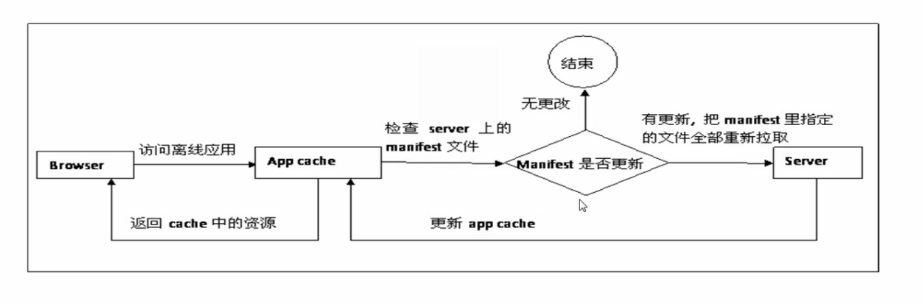
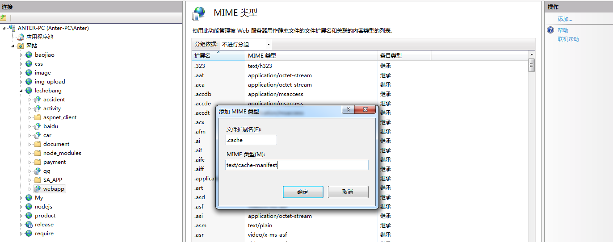
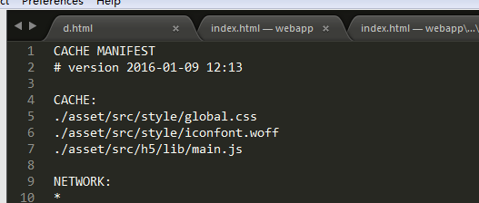

CONTENT OUTLINE
关于H5离线缓存的技术有点陌生，记一点笔记！
参考原文传送门
H5离线缓存技术
简介
HTML5提供了很多新的功能以及相应的接口，离线存储就是其中的一个，离线存储可以将站点的一些文件存储在本地，在没有网络的时候还是可以访问到以缓存的对应的站点页面，其中这些文件可以包括html，js，css，img等等文件，但其实即使在有网络的时候，浏览器也会优先使用已离线存储的文件，返回一个200（from cache）头。这跟HTTP的缓存使用策略是不同的。
它是浏览器自己的一种机制，随着移动互联网时代的到来，网络可靠性降低，如果我们已经将需要的文件缓存下下来，一旦网络无法访问，也能继续访问。
而且做好相应资源的缓存可以带来更好的用户体验，当用户使用自己的流量上网时，本地缓存不仅可以提高用户访问速度，而且大大节约用户的使用流量。
什么是Manifest
其实 Manifest 是一个简单的 文本文件，它的扩展名是任意的，定义需要缓存的文件、资源，当第一次打开时，浏览器会自动缓存相应的资源。
Manifest 的特点：
- 离线浏览：即当网络断开时，可以继续访问你的页面。
- 访问速度快：将文件缓存到本地，不需每次都从网络上请求。
- 稳定性：做了
Manifest缓存，遇到突发网络故障或者服务器故障，继续访问本地缓存。

Manifest的使用
HTML 新增了一个 manifest 属性，可以用来指定当前页面的 manifest 文件。
创建一个和 html 同名的 manifest 文件，比如页面为 index.html ，那么可以建一个 index.manifest 的文件，然后给 index.html 的 html 标签添加如下属性即可：
1 | <html lang="en" manifest="index.manifest"> 或 |
注意
1、manifest 的引入可以使绝对路径也可以是相对路径，如果你使用的是绝对路径，你的manifest文件必须和你的站点挂在同一个域名下
2、manifest 文件你可以保存为任意的扩展名，但 mine-type 必须是 text/cache-manifest。
<html lang="en" manifest="index.manifest"> 或 <html lang="en" manifest="index.cache"> 在服务器上部署时需要在服务器上添加相应的 mie-type

3、manifest 标签应该包含到你需要缓存资源的页面，当第一次打开该页面时，浏览器会解析该页面中的mainfest，并缓存里面列举的资源，同时该页面也会自动会被浏览器缓存，即使该页面没有在 Manifest中 列出。
注意： “/page-url/“, “/page-url/?something“, “/page-url/?something-else“ Manifest 会当成不同的页面，如果 page-url 页面中包含了 Manifest 属性则浏览器会将该页面中列举出来的资源分别保存，所以 Manifest 最好使用在SPA（单页应用）项目中。
在Chrome中，可以使用 chrome://appcache-internals/ 查看你缓存在本地的资源文件。
Manifest文件结构
接下来详细说说manifest的细节，一个典型的manifest文件代码结构像下面这样：

manifest 文件，基本格式为三段： CACHE， NETWORK，与 FALLBACK，其中 NETWORK 和 FALLBACK 为可选项。
而第一行 CACHE MANIFEST 为固定格式，必须写在前面。
以#号开头的是注释，可以是版本号，时间戳等等。
一般会在这写个版本号，用来在缓存的文件更新时，更改manifest的作用：浏览器已经缓存下来的缓存，只有当 manifest 文件发生了改变才会更新本地缓存，即使你的代码发生了更新，本地浏览器也是不知道的，所以每次发布代码时你可以更改下#后面的信息比如版本号或者时间，告诉浏览器相应的更新本地缓存。
1、第一行是CACHE MANIFEST 这是必须需要的。
2、CACHE（必须） 标识出哪些文件需要缓存，可以是相对路径也可以是绝对路径。这里列举出来的文件，当第一次加载下来时，会被浏览器缓存在本地。
3、NETWORk 这一部分是要绕过缓存直接读取的文件，可以使用通配符 *，大多数网站使用 * 。 当使用* 时 表示出 CACHE指定文件外，其它所有页面都需要联网访问。
4、FALLBACK （可选） 当资源无法访问时，浏览器使用后备资源去替代。第二个表示后备页面。两个 URI 都必须使用相对路径并且与清单文件同源。可以使用通配符。
下面的例子中，如果无法建立因特网连接，则用 “404.html” 替代 /html5/ 目录中的所有文件。
1 | FALLBACK: |
下面的例子中，当任何页面无法访问时跳转到 “404.html”页。
1 | FALLBACK: |
注意：
1 必须在第一行，2、3、4 直接的顺序是随意的，并且在同一个
manifest文件中可以出现多次，多次和一次效果一样。添加
manifest属性的页面会自动被浏览器缓存，不需要再CACHE节点中再次添加。
如何更新缓存
如下三种方式，可以更新缓存：
- 更新manifest文件
- 通过javascript操作
- 清除浏览器缓存
给 manifest 添加或删除文件，都可更新缓存，如果我们更改了 js ，而没有新增或删除，前面例子中注释中的版本号，可以很好的用来更新 manifest 文件。
html5 中引入了js操作离线缓存的方法，下面的js可以手动更新本地缓存。
1 | window.applicationCache.update(); |
如果用户清除了浏览器缓存（手动或用其他一些工具）都会重新下载文件。
我们可以使用代码手动更新manifest缓存，一旦webapp源码更新，会自动更新本地manifest缓存，使用户始终访问到最新的源码。
1 | window.applicationCache.addEventListener('updateready', function(e) { |